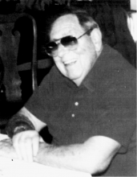

Please note: the AAS Obituaries are temporarily being hosted on this website while their full content is being ingested into the PubPub publishing platform newly adopted by the Bulletin of the American Astronomical Society. When the migration is complete, your existing links will take you to the final, migrated content. Contact peter.williams@aas.org with any questions.
Douglas Duke (1923-1999)
Douglas Duke, Professor Emeritus of astronomy at the University of Miami in Coral Gables, Florida, died of myocardial infarction in Carlsbad, California, on Friday, 5 November 1999.
Born in Philadelphia, PA, on 7 August 1923, Duke pursued his undergraduate studies on the West Coast, where he received his AB degree in 1947 from the University of California. From there he went to the University of Chicago, which, in 1950, conferred on him a PhD in astronomy. While working on his doctorate, Duke was also an assistant at the Yerkes Observatory. Afterwards, from 1950 to 1951, he was an assistant professor of astronomy at the University of North Carolina and also the assistant director of the Morehead Planetarium in Chapel Hill. In 1951 Duke received an appointment as an assistant professor in astronomy and physical sciences at the University of Florida. By 1954, when he departed Florida, he had risen to an associate professor.
For the next dozen years, until he was appointed professor of astronomy at the University of Miami in 1966, Duke took a series of positions with a variety of employers. He was head of the Visibility Branch at the US Naval Electronics Laboratory (1954-1955); he was a research engineer for Convair Astronautics (1955-1957); a senior engineer at the Atlantic Missile Range of the Radio Corporation of America (1957-1959); a member of the technical staff of the Institute for Defense Analysis in Washington, DC (1959-1962); a consultant for the Commanding General of the North American Air Defense Command (1961-1962); a staff scientist to the vice president of research for the Autonetics Division of North American Aviation, Inc (1962-1964); and director of aerospace programs at Data Dynamics, Inc. (1964-1965).
Starting in 1966, Duke enjoyed almost two decades in his position as professor of astronomy at the University of Miami. He specialized in observational astrophysics, astrometry, missile and satellite tracking instrumentation, data reduction, satellite and interplanetary orbits, celestial navigation, atmospheric optics, and planetarium operation. After he became Professor Emeritus in 1985, Douglas and his wife, Helen, settled in Carlsbad, California near Lake San Marcos, where they both became members of the Olympic Resort Hotel and Spa. In an issue of the spa's newsletter, Andrew Frend, a fitness instructor there wrote a tribute to Duke: "All of us fortunate enough to have known Doug, will remember him for his vigor and great sense of humor. Although he is no longer with us physically, his spirit will always live on in the memories we carry."
Douglas Duke was a Fellow of American Association for the Advancement of Science, a member of Astronomical Society of the Pacific, a member of Optical Society of America, and a member of American Mensa Limited. He is survived by his wife, Helen, whom he married in 1944; by their two daughters, Kathleen Mary Deutsch and Jeanne Marie Master; by his grandchildren, Jeffrey Alan Deutsch, Laura M. Wickline, and Jessica Helen Master; and by his sister, Florence Hill.
Photo courtesy of Olympic Resort Hotel and Fitness Spa
Obituary written by: Barbara L. Welther (Smithsonian Astrophysical Observatory)
BAAS Citation: BAAS, 2000, 32, 1660
SAO/NASA ADS Bibcode: 2000BAAS...32.1660W